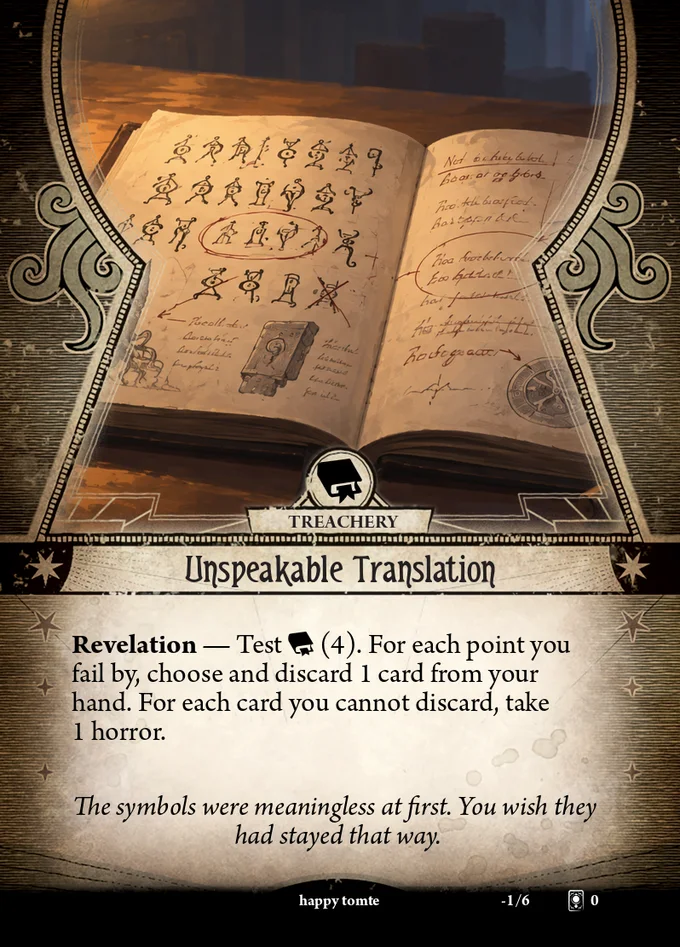

GitHub is the published source
Published source data, translations, and review states are versioned in the repository. Progress is calculated from those files instead of being maintained twice.
Community Translation Workbench
Unspeakable Translations connects a local translation workbench with a public project catalog. Capture source material once, maintain translations per language, and share reviewed packages through GitHub Releases.

Source cardsTranslationRelease
Edit · review · exportOne shared state
The repository records what has actually been completed. The website exposes that state, while the local app makes the work accessible without requiring contributors to understand Git.
Published source data, translations, and review states are versioned in the repository. Progress is calculated from those files instead of being maintained twice.
Create or download projects, capture card data, translate, and review locally while the app keeps storage details out of the way.
Visitors can inspect real progress for each language and download a release when a reviewed package is available.
Prepare once
Source images, captured text, metadata, and reusable Shoggoth layout data belong to the shared project. Every translation builds on that work without copying it.
Follow the tutorialReady?